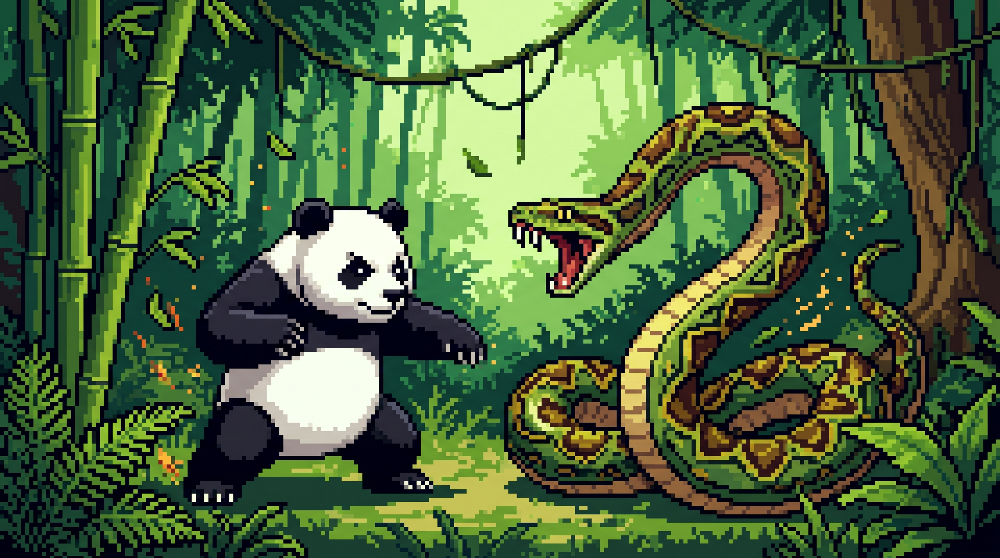

Style de combat : Arts martiaux ancestraux (Kung-Fu végétarien) et poids lourds.
Armes fatales : Ses griffes acérées et sa technique secrète du « rouleau compresseur de bambou ».
Ancien pensionnaire paisible d'une réserve, le Panda a monté sur le ring après une longue carrière dans le traitement de données (maîtrisant le tri multicritères). Fatigué des graphiques en camembert, il a opté pour le combat rapproché.
Style de combat : Constriction silencieuse et manipulation de variables en douce.
Armes fatales : Ses anneaux d'acier et sa capacité à importer des bibliothèques destructrices (import chaos).
IndentationError).Issu des profondeurs de la programmation, ce redoutable serpent s'est reconverti dans le catch de haut niveau. Capable de se faufiler partout, il lit les mouvements de son adversaire grâce à des algorithmes prédictifs.
Découvrez mon travail et mon profil professionnel :
Visiter mon profil GitHub4 par Salma AZIZ